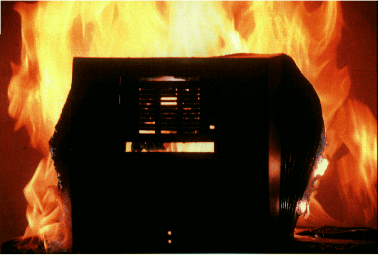

Date: Wed, 24 Mar 93 19:11:02 EST
From: simsong
To: druby
Subject: cube burning
Cc: edit
To: Dan Ruby, Editor,
NeXTWORLD Magazine
From: Simson L.
Garfinkel, Senior Editor, NeXTWORLD Magazine
Subject: NeXTCube Serial Number AA001032
Date: March 16, 1993
Dear Dan,
I am writing this
memo to explain what happened to the case our NeXTCube Computer, Serial Number
AA001032.

As you know, years
ago, when NeXT first contemplated making computers, Steve Jobs decided that
machines should be in the shape of a cube, and that they should be built from
cast magnesium. Although magnesium is a
relatively expensive metal, it is remarkably strong and lightweight. No doubt, this let NeXT save on shipping
expenses, although the added handling and manufacturing costs was one of the
factors which led to the cube's high cost.
At the time that NeXT brought their system to market, the only other
company to incorporate a magnesium case was Grid, which was making a portable
computer. (I am told that Apple also
uses magnesium for the inside case of its Duo computers, but I haven't been
able to verify this fact.)
As a former chemist,
I was attracted to the NeXT's magnesium case for a different reason: magnesium
burns with a brilliant white flame.
When I was in high school, I used to steal magnesium metal from the
chemistry lab and set it on fire in my backyard. A two-inch long strip would burn for nearly a minute, the
white-hot flame slowly turning the shiny grey metal into a plume of white smoke
(magnesium oxide --- a harmless material which is the main ingredient in milk
of magnesia.)
When NeXT announced
that the first NeXT Cube was made of cast magnesium, I am sure that I was not
the only person who imagined what fun could be had by setting it ablaze. Of course, at more than seven thousand
dollars each, I doubted that anybody would ever actually carry out the
experiment.
Anyway, during the
fall of 1991, I interviewed Rich Page, NeXT's then vice-president for hardware,
for an article which we later ran in NeXTWORLD Extra. At the time, I asked Mr. Page if he could get me an empty NeXT
Cube case for the purpose of having such a burning. Page smiled and said that he thought something could be
arranged. A few days later, he called
me up and said that I could pick up an empty cube at NeXT's Freemont factory.
My plan was to light
the cube along its top edge. I imagined
that the magnesium would burn brightly and the fire would move slowly down the
sides, a triumphant expression of the power of NeXT's technology to set the
world afire.
I drove down to
Freemont the next day and picked up the cube, which was waiting for me behind
behind the receptionist desk at the factory.
Page had delivered exactly what I had asked for --- an empty magnesium
case, without any electronics, back plane, or rubber feet. The case was also missing the NeXT logo, but
you can't get everything. I put it in
the back of my Jeep and drove back to my apartment in Berkeley.
Over the next few
months, I tried to think of some way to ignite the magnesium. One idea that I had was to use a mixture of
potassium permaganate and glycerin, which bursts into flames and produces an
enormous amount of heat after just a few minutes. I asked a chemist friend if he could supply me with the
ingredients: he suggested that I simply use a MAP gas torch. "It's hotter and easier to
control," he said. Unfortunately,
I left California before I was able to carry out the experiment. I left the cube with my friend Sophia for
safe keeping.
A year later, Sophia
told me that she was sick of keeping the cube.
I came out to California and transferred the cube from Sophia's house to
your basement. By this time, we had
started to hear rumors that NeXT might be discontinuing its cube in favor of
the "NeXT Brick," a RISC-based computer. I started thinking that we might want to use a photograph of the
burning cube for the cover of that issue that announced the NeXT Cube's
demise. The image of the burning cube
haunted my dreams. I couldn't wait to
do the deed.
The day NeXT
publicly announced that it was discontinuing its hardware line, you called me
up and said that it was time for us to burn the NeXT Cube in your
basement. I was coming out to California
to attend the third annual conference on Computers, Freedom and Privacy: it
seemed like an ideal time to conduct the burning. Getting a torch would be easy, and now with the news peg, you
told me that you were willing to pay for the photographer. The only problem, of course, was where to do
the actual burning.
The whole time that
I had thought about burning the cube, I had not thought much about where we
would actually conduct the experiment: I had always assumed that we would go to
parking lot, or walk down to a beach, light the computer with a torch, snap a
few photographs, and then wait for the magneisum to burn itself out. But as I began to consider what would be
really involved with the burning, I realized that we would need to be more
professional.
The real reason for
my concern was to protect the magazine from legal liability. As I've already said, magnesium burns with a
brilliant white flame and a tremendous amount of white smoke. Although the smoke is non-toxic, I realized
that the smoke might attract the attention of a passing police officer or the
fire department. We could then be fined
for conducting an open-air burning without a permit or causing a fire hazard or
something like that.
For these reasons,
the week before I came out to California, I started calling fire departments in
the Bay Area to find out how we could get a permit for burning the cube. I must have called ten different departments
--- each one told me that they didn't give such permits anymore. I was also told that I would have to call
the Bay Area Air Quality Management District to get a waiver from the emission
laws, that to get the waiver I needed to file an application and have a
hearing, and that even then the waiver was not guaranteed.
I also tried calling
numerous analytical laboratories in the Bay Area to see if any of them had the
facilities and the necessary permits to conduct the burning. Most of the labs had faciities for burning a
few grams of magneisum, but nothing as large as a NeXT Cube.
Finally, in
frustration, I decided that I would go through with my original plan ---
driving out to the desert and setting the cube off with a torch. I imagined that we would drive east on
Interstate 580, find a desolate country road, and then drive north or
something.
It was then that I
remembered that Lawrence Livermore Laboratory, a Laboratory owned by the
Department of Energy and run by the University of California at Berkeley. The Livermore Lab is a located in Livermore,
Califonria --- just 20 miles from San Francisco, out Interstate 580. I had been at the lab in 1989 for an article
I was writing for the Christian Science Monitor. Back then, the people in the press office had been very
helpful. I was sure that a national
weapons laboratory would have the facilities for burning a few kilograms of
magneisum. They would probably have the
necessary permits as well.
My next phone call
was to the press office at Livermore, which referred me to the community
relations group. I told the people at
the group what I wanted to do. They had
me call a person named Burt.
Now, every time in
the past when I had called a fire department or a laboratory to tell them what
I wanted to do, I had to spend several minutes telling them what I wanted to
burn, why I wanted to burn it, why I was having a hard time finding a place
where I could do the burn, and a variety of other things. It was a big hassle. But when I got Burt on the phone, I wasn't
more than 10 seconds into my explaination when he interrupted me and said
"You want to burn a flare, right?"
"Uh, right,
that's what I want to do," I said, quite surprised.
"Well, we have
a site that might work out just right for you.
Site 300. We use it for testing
high explosives. What day do you want
to come out? I'll check to see if the
site is free on that day."
I was overjoyed.
"So, exactly
what are you burning?" he asked.
"Just a
computer case made out of magnesium," I told him.
"That's
it? No plastic, no wires, no PC
boards?"
"Nothing,"
I said. "Just a case."
"No rubber or
chrome? We need to know if there is
anything that might be toxic. We have
reports to fill out with the EPA just like everybody else," he said.
"No, nothing
but the magnesium," I said. Then,
as an afterthought, I added: "The case is painted. Is that okay?"
"What's in the
paint?" he asked.
I didn't know.
"I need to have
an MDS --- a Material Date Safety Shet --- on the paint before I can let you
burn it," he said.
Great, I
thought. Where would I get that? "No problem," I said. I promised to fax him the MDS within two
days. In the meantime, Burt said, he
would check into our using site 300.
I remembered that
there had been some traffic in the NeXT news groups about the paint that NeXT
had used on its computers --- mostly it was from people who had purchased
external disk drives and wanted to paint them with the exact shade of black
used by NeXT. I didn't have a copy of
the archives on my computer, so I sent a message to the BCS-NeXT mailing list;
Charles Perkins wrote back. Perkins had
gone to great lengths to find out the exact shade of paint. He sent me the following information:
Sparyon Paint
Omni-Packblend
4Next-Black (icon
black)
LAV-16
25216
Sprayon Paints had offices in both Ohio and California. I called the Ohio office; they said that the
LAV-16/25216 describes a paint can, but that people can fill it with whatever
kind of paint that they want. A call to
California had the same results. Nobody
knew what "4Next-Black" paint was.
They said that I should call the distributor.
At this point, I called NeXT for help. I told them that I wanted to burn a computer and needed to know
what was in the paint. That's when I
learned that most of the people in the hardware division had by this time been
fired. Somebody in hardware maintenance
told me to call an outfit called Chicago Metals. He didn't have a phone number for them, so I called directory
assistance for Chicago and got a phone number.
A nice woman answered the phone; she told me that she was a
jeweler. Deadend.
I called NeXT a second time.
I told the person that there had to be some right-to-know paperwork for
the people who were applying the paint to the cubes. California state law.
Unfortunately, the person responsible for the paperwork had been
fired. Finally, I got the name of an
engineer who had worked on the Cube's power supply. He told me that NeXT didn't paint its own computers --- the
painting was done by a finishing company in San Jose. When I called up that company, I told them that I had a potential
environmental accident and that I needed to know the exact paints that they had
used. (Well, perhaps I was stretching
the truth just a bit.) The following
day, a person from the finishing company called me back with the
Sherin-Williams paint code. A call to
Sherin-Williams revealed that the paint was a non-toxic water soluble
paint. They faxed me an MDS, which I
refaxed to Burt at LLL.
When I called Burt back, however, there was some bad news. Livermore's head Fire Safety expert didn't
want us burning the cube outdoors: he wanted us to burn it in their "burn
cell," a brick-and-steel box that had been built specifically for burning
materials that might be hazardous. The burn
cell was equipped with a sophisticated ventilation system for filtering the
smoke and removing any toxins. The burn
cell also had fire safety equipment around the facility in case the fire got
out of hand.
Livermore needed the names, social security numbers, and addresses
of everybody who would be inolved with the project. At this point, our art director Chuck found us a photographer
named Eric who would be free on the day that we wanted to do the burning, a Tuesday. Eric went out on Monday to take a look. Everything looked perfect. Eric was especialy happy that we were
burning the cube indoors, rather than outdoors, since it was nearly impossible
to see flames and fire in direct sunlight.
The only thing that concerned that photographer was the fact that we
only had one computer to burn. What if
something went wrong?
On Monday, the day before the burn, I was walking through the
NeXTWORLD of offices, wondering if I
could get a second computer --- a "backup" computer. Looking around the offices, I found an old
Cube that didn't see to be functioning.
It was missing a hard disk and a CPU board. I asked our system manager if I could borrow it as a backup. He said "sure." I then went to Dan Lavin, just to get his
permission.
This was the fateful computer AA001032.
"No, you cannot burn this computer," Lavin said. The system manager overheard; he told me
that he didn't realize that I wanted it as a backup for a destructive test.
"But this computer is useless," I told Lavin. "There's nothing here that anybody can
use."
An argument ensued. I
finally got Lavin's permission to take the case of AA001032 as a backup ---
provided that I first remove the chassis, back plane, power supply, optical
drive, and anything else of any possible value. I found a NeXT tool and proceeded to do just that --- with
Lavin's eager assistance.
On Tuesday morning I picked up Sally Chew, our managing editor, at
the train station and headed out to Livemore, where we rendezvoused with Eric
and his assistant, a woman named Pam. We went to the badge office, had our IDs checked, and were given
badges. A few minutes later we were
joined by Harry Hasegawa, a jolly man who appeared to be in his late 40s who
was head of Livermore's fire research group.
Harry was our official escort. He took us back to our cars then led us
through the Lab's security perimeter.
Everything seemed to be going according to plan.
Livermore is a huge facility.
We drove a mile down the road, with buildings on either side of us, then
turned through a traffic circle and finally stopped in front of a thirty-foot
cooling tower. Next to the tower was
the burn cell itself --- a metal shack about thirty feet wide and 20 feet
high. The cell had two large metal
doors on the front. The smell of an old
fire permeated the area, like the small of a campsite the morning after a large
bonfire.
Standing next to the building was Kirk Staggs, a man in his
mid-40s wearing a T-shirt, blue jeans, with a long reddish beard. Staggs told me he was a mechanic and
technician: whenever the fire research center needed something built, they
turned to him. For example, he had
built the burn cell's ellaborate ventilation system which could be controlled
to let in a measured amount of air.
Next to the cell were two wooden shacks which were supposed to simulate
the inside of a nuclear reactor: the group had been simulating what might
happen at different Department of Energy installations if the reactor's core
should happen to catch fire.
Inside the doors of the burn cell, I was surprised to find a
computer room --- at least, a raised floor with a lot of cables. The fire safety group was simulating
computer room fires --- specifically, fires underneath raised floors. To start the fires, they pumped a large
amount of power through the wires with a huge power supply. It was the perfect setting for burning the
computer.
Since we didn't know how brightly the cube would actually burn,
Eric suggested that we take a series of photographs of a cube in the burn
chamber with a flash, then take a number of photographs of the buning
cube. We could then photographically
superimpose the two images. It sounded
like a good idea to me.
Eric and Pam spent the first hour setting up their lights inside
Livermore's burn chamber and positioning the cube. Since my cube didn't have the NeXT logo in place, they
photographed the backup cube. When we
were finished with these shots, I took the spare cube and put it back in the
trunk of my rental car.
The day before I spoke with him, Eric had wanted to know all sorts
of details about how brightly magnesium burned. "Bright," I told him.
Unfortunately, "Bright" is not good enough to set an exposure
meter on a Nikon F4. Not satisfied with
my answer, Eric had purchased a bar of magnesium the previous day at a brazing
supply company. The idea was to burn the
magnesium bar and see how bright it was: that would then tell use what ballpark
to use exposure when we burned the computer itself.
Kirk cut a few 2-inch segments from the bar, and place one of them
in the burn chamber. He then drove
around a fork lift, put a wooden stage on the hoist, and set up a video
camera. Meanwhile, Eric and Pam were
setting up their camera equipment. When
everything was ready, another Livermore worker suited up with fire-proof pants,
fire-proof coat and helmet, put on a respirator, and set the bar on fire with a
MAP gas torch.
All this time, I had been worrying about the mechanics of setting
the bar on fire with the torch. In
order for the bar to catch on fire, part of the magnesium would have to be
heated up past its ignition point. But
the bar was so thick that I worried that it would conduct the heat of the torch
away before it heated up to the magic temperature.
As we watched, the blue flame of the torch licked the top of the
magneisum bar. After half a minute,
there was a distinctive orange glow from the bar's center. Eric had told us that the magnesium bar was
wrapped around a a ferrus core. Slowly
the bar began to melt. Then suddenly
there was a spark of brilliant white light.
The person with the torch backed away.
There were a few more sparks, then a steady white flame.
I knew that magnesium burned brightly, but I didn't know how
fast. When Eric asked me how long the
cube would be burning for, I told him "at least a minute." This didn't inspire confidence in his
ability to capture the scene --- he thought that he would have just one chance,
and that would be it. Since the largest
piece of magnesium that I had ever burned wasn't any larger than a pencil, I
didn't know if a large piece would burn quickly or slowly. It turns out, though, that magnesium burns
very slowly. The 2-inch segment took
nearly five minutes to burn completely.
When the fire finally went out, all that was left was a caky white ash
--- magneisum oxide, the same ingredient that is in Milk of Magnesia.
"You could eat that stuff," I told Sally. She made a sour face.
While the bar had burned, Eric had taken a series of photographs
of the burning bar with a Nikon camera and Polaroid film. Now we peeled back the paper on the
Polaroid, and one of he Livermore employees. We discovered that, while
magnesium does burn very brightly, it is not nearly as bright as sunlight
is. The first round of photographs were
dreadfully underexposed. We set up a
second bar of magnesium, set it burning, and discovered that an f-stop of 3.5
with an exposure of 1/60th of a second with 100ASA film was just about right.
With these test shots out of the way, we started to think about
burning the cube itself. When I had
called NeXT to find out what kind of paint they had used to paint the cube, one
of the people I had spoken with told me that the cube was made out of
"magnesium alloy which is specially designed to be difficult to
ignite." These words came back to
me as I stood in front of the burn chamber at Livermore. What if we couldn't get the cube to
ignite? The idea stood out in my mind like
a sore thumb.
I looked at our first cube.
The NeXT Cube consists of a five-sided piece of molded metal and a rear
plate which is screwed in place. I
realized that once we put the cube into the burn chamber, we wouldn't be able
to see the cube's back side. That meant
that we could burn the rear plate first, as another test.
Rather than using standard screws, NeXT decided to fasten the rear
of their NeXT cube with a non-standard hex screw. Fortunately, I had brought my special "NeXT Tool" to
remove the rear panel. I took it off
and handed it to Eric.
"How about if we try to burn this first, just to get an
idea?" I suggested.
"Great! The more
tests, the better," he said.
We put the rear panel into the burn chamber. The panel is a square piece of metal, 14''
on each side, and roughly half an inch thick.
We stood it on end with a pair of bricks. Then we hit it with the MAP gas torch.
Nothing happened.
We kept the torch focused on the rear panel. Slowly it heated up in the spot where the
flame lapped. Soon the metal started to
melt. Then it puffed up with a white,
caky ash.
"What's going on?" somebody asked.
We kept the flame on the spot.
After another minute, we saw that same telltale white spark. "It's caught!" somebody said. The person holding the torch backed
away.
The flame sputtered for a few seconds, then it went out. Something was clearly wrong.
We tried again with the MAP gas torch, with similar results. "We have problems like this all of the
time," Kirk said, trying to reassure me.
"Sometimes its really hard to get things burning." He then walked over to a storage shed and
wheeled back an oxygen-acetylene torch.
"This should set it on fire," he said with a gleam in his
eyes.
The acetylene torch bruned a lot brighter than the MAP gas, but
the results were similar. The back
panel glowed red, burned white, sputtered a little, then went, leaving a caky
white residue --- and a hole.
"This is so NeXT," I told Sally. "Everything works great in the tests,
then when you try to make it work for real, in the field, nothing works. They build a computer out of magnesium, and
it doesn't even burn!"
A drop of water hit my nose.
I looked up. Another drop of
water hit my glasses.
"And now it's starting to rain," Sally said.
Everything was going wrong.
"I'm sorry!" I said.
"I forgot to fix the weather."
Scott tried again with the torch.
He tried running the acetylene gas without the oxygen: instead of a
bright blue flame, he got a smoky orange ball of fire. But the results were pretty much the same:
another hole in the metal, but the fire wouldn't sustain itself.
I looked around the grounds.
Off in the corner, I saw something which looked like an industrial
charcoal grill: a three-foot circular basin filled with gravel. The purpose of the contraption, we had been
told, was for conducting large-scale flame tests.
"How about if we use the burner?" I asked.
"We can try, if you want," Kirk said. "If it doesn't work, I don't know what
will."
It took two people to picked up the burner and placed it on the
floor of the burn cell. Then Kirk went
inside the building and spent another fifteen minutes hooking it up to the
natural gas pipeline. It was then that
I noticed that the tube that brought the natural gas into the burner was
three-inches thick. Just how much gas
did this burner use, anyway? I was glad
that we didn't have to pay for the use of the lab's facilities.
Once the burner was hooked up, Kirk took a large kimwipe, doused
it with kerosene, lit it with the MAP gas torch and dropped it on the
burner. Then he turned on the natural
gas. A moment later, a sheet of orange
flames lept three feet into the air.
Satisfied that the burner was working, Kirk turned it off and got ready
for the burning.
I picked up my cube (I remind you that the cube we intended to
burn was my own personal property), jumped up to the stage of the burn cell,
and gently placed the cube the middle of the burner. Meanwhile Eric, our trusty photographer, made sure that all of
the cameras were focused and ready to go.
Still, I was nervous. What
if the cube didn't burn? What if the
natural gas flames weren't hot enough?
Eric and I decided to take the rest of our magnesium bar --- the bar
which had burned so well in the earlier tests --- and put it in the back of the
cube, just to give it a head start.
"I feel like I'm working for NBC," I told him. (It was just a few weeks ago that the news
had broken about NBC placing model rocket motors on the underside of GM trucks
in order to force the trucks to explode during a photo shoot.) Scott cut the bar into small one inch
segments, which I placed along the cube's inside edges. I then took two handfulls of magnesium dust
and turnings and spread them evenly along the cube's front inside wall.
It was starting to rain harder.
Eric started worrying about his camrea equipment. Sally found a large sheat of cardboard and
held it over the equipment, becoming a human umbrella. Meanwhile we doused another Kimwipe with
kerosene, and dropped behind the cube.
Finally we turned on the gas a second time.
Once again, bright orange flames leapt into the air. Eric and Pam were clicking the shutter
release of their Nikons.
"Burn!" I shouted.
But only the gas heard me call --- all the cube did was sit there.
Eventually I started to see smoke, but it was just the paint. "At least we know that the paint is
non-toxic," I grumbled. The paint
started bubbling, then burned away, leaving the black anodized magnesium
alloy. ("It's an alloy that is
resistent to burning," the voice of the soon-to-be-ex-NeXT-employee came
back to me.) As the cube heated up more
its top started to sink. One of the
sides started to peel back.
Then I saw it. A glimmer
of white. A spark. Then a flame --- a small flame, but a flame
nevertheless, on the cube's left side.
A white dot of fire, growing larger.
Eric's Nikon whirled. A second
dot of fire started on the cube's right side.
"There it goes!" I exclaimed.
Both dots went out, leaving a caky white residue.
"It's not a very uniform alloy," Kirk said behind
me. In spots --- the spots that were
burning --- it was nearly pure magnesium.
But other spots must have been filled with ... something else. That alloy that was resistant to
flames. Would this never catch?
The cube continued its slow collapse, the initial pattern
repeating itself. The metal would pull
back in a place, there would be a momentary glimmer, burning white, and then
the spark would go out. Throughout the
entire show, the bright orange flames surrounded the cube on all sides. It really felt like NBC. The experience held absolute resemblance
to what I had imagined: this wasn't triumph, this was failure. We couldn't even get the cube to burn!
And the rain was coming down even harder.
Eric kept shooting his camera.
"I'm sure that this isn't what you want," he said, "but
at least we'll get something."
Indeed, the computer surrounded by the orange flames wasn't an uninteresting
photograph --- it simply wasn't the image of my dreams.
A few minutes later, what had been the case of a NeXT Computer had
been reduced to a smoldering pile of slag magnesium, with pock marks of white
ash, charred black metal, and the occasional white spark.
Then it happened. A few
white sparks appeared and didn't go out.
Then a few more appeared. Then
the white sparks began to spread. White
smoke --- a lot of white smoke --- began to rise from the computer. And then, very suddenly, the entire slag
pile burst into a blinding white flame.
"We have ignition!" somebody shouted.
I grabbed a pair of welding goggles to look at the pool of metal
as it burned more and more brightly.
The white ash was still forming, but this time it wasn't putting out the
fire. Instead, the fire continued to
burn and burn.
But the photographs, I thought.
The photographs won't make any sense!
Yes, we finally had a burning NeXT computer --- the only problem was
that it didn't look anything like a NeXT computer. There was no recognizable cube.
The metal wasn't even black anymore --- it was covered with white
ash. But it was hot, and it was
burning, and it was a magnesium fire.
That's when I remembered the backup cube. The gas fire hadn't been enough to set the first
cube ablaze, but surely, I thought, this magnesium fire would be enough to
start the other one burning.
"If you take this with you, you're going to end burning
it," Lavin had said to me the night before.
"No I won't," I had promised him. "It's just a backup, just in case
something goes wrong."
Well, something had gone wrong.
And now, I realized, we had a chance to make something go right.
I looked at the burning pool of slag. "Sally," I said after a few seconds, "let's throw
in the backup."
"I was just thinking that," she said.
Eric smiled.
I went to one of the Livermore's professional pyros. "We want to put the second cube on top
of the fire. Do you think that it would
work?"
"Sure it would," he said.
I went back to the car and got the backup cube. I handed it to Kirk, who was still wearing
the fire-proof pants.
"Wait a second," Eric said. "Let's reload our cameras."
"Hurry," I said, looking at the magnesium fire. He hadn't gotten brighter in the last
minute, which meant that it would probably start burning out soon.
Eric and Pam reloaded their cameras. I looked at my camera: I was on the 36th frame. I pushed the button on the bottom and
quickly reloaded my camera as well.
Finally we were all ready, and Kirk put the second cube on burning
remains of the first.
Ignition was almost instantaneous. Within seconds, the intense heat from the pool of burning
magnesium had set the second cube's sides smoking, then burning. Once again I saw that tell-tale bright white
light with touches of green. Flames
trailed up the cube's sides. The cube's
top sagged a bit, then smoked, then started to burn. This time, the object engulfed by fire was clearly a NeXT
Computer.
"Yea!" said Sally, who was still holding the cardboard
umbrella over the hotograher's heads.
I clicked away on my camera.
Eric took pictures with his. But
the whole emotional tone was wrong.
This wasn't the triumph of a burning magnesium case, setting the world
on fire. This was a collapsing metal
failure, melting into a pool of fire and being consumed by it. Perhaps it was a more accurate
representation of NeXT's true reality.
After all, physics doesn't lie.
How were we to know, when we had set out that morning, that in our brief
four-hour experiment, we would recapitulate NeXT Computer's experience as a
hardware manufacturer? I looked at the
burning cube. White-smoke streamed
upwards. At its base, red embers were
emerging. The back wall collapsed but
the front wall still plainly retained the Cube's original shape. I chuckled, then started laughing so hard
that tears came to my eyes. One thing
was definately clear:
"Ruby is never going to let us run these photographs," I
gasped to Sally.
The second cube continued to burn, its sides falling into the slag
pile that had consumed the first.
"You know, we could make it flare up by throwing some water on
it," one of the Livermore engineers suggested. It seemed like a good idea to us, so he pulled out a garden hose
with a trigger nozzle and doused the fire with a few quick spurts. The water instantly turned to steam. Thick clouds of white smoke bellowed
forwards, out of the chamber. We were
covered with a fine white powder.
"Wow," Eric whispered.
We put some more water on the fire, with much the same
results. Eventually we were left with
another pile of burning slag.
"Let's just let it burn out," Kirk said. Eric and I agreed: there was nothing left to
photograph.
Eric started taking down his equipment. When he was finished, Sally put down the cardboard. That's when she noticed that it had stopped
raining. "Somebody could have told
me," she said with a sour voice.
Finally, when we were out of the way, Kirk closed the burn cells' two-ton
doors.
"It should burn itself out completely," he said. "I doubt that we'll have anything that
needs to be thrown out."
* * *
So that's how it happened, Dan.
We didn't intend to burn cube AA0010032 --- but we were lucky to have
brought it along, considering the other problems that we had achieving
ignition. If I had to do it again, I
would have known to ask Rich Page for two empty cubes, one for the photo shoot,
and one for kindling. And even if I
didn't get the second computer, if I had it to do all over again, you can be
sure that I wouldn't take the cube that was supposed to be installed underneath
your desk.
_